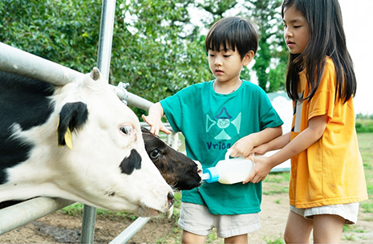

第1次産業
- Home
- 投資環境
- 未来の有望産業
- 第1次産業
第1次産業 (Primary Sector)


アジアで高い認知度を確保している済州の清浄自然ブランドと世界的な休養観光産業をリンクした済州の持続可能な第1次産業は、潜在価値の高い未来の有望産業です。
韓国の最南端に位置する火山島済州の豊かな農業、海洋、牧畜資源と水資源を活用して生産された高品質の製品は韓国の消費者だけでなく、中国をはじめとするアジア地域の消費者に広く愛されています。
済州のクリーンな資源を加工して高付加価値商品として再生産するエコブランド商品の開発と優秀な観光インフラを合わせた農村観光は済州のアイデンティティーと結合し、他の地域には見られない特別な価値を付与します。